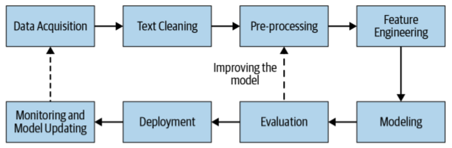

2.1 Data Acquisition
Where the text comes from, and what counts as good enough data.
These notes walk through the lecture slides. The original deck is unchanged; use (slides) on the course hub if you want that PDF.
1. The pipeline this week sits in
An applied NLP system is a loop, not a single model.
| Stage | Job |
|---|---|
| Data acquisition | Get text that matches the task |
| Text cleaning | Pull the words out of HTML, PDF, or other junk |
| Pre-processing | Put the text into a form you can count or embed |
| Feature engineering | Turn that text into numbers |
| Modeling | Fit something that maps numbers to a decision |
| Evaluation | Measure whether the decision is good enough |
| Deployment | Plug the module into a larger product |
| Monitoring | Watch it, then collect more data and start again |

Note 2.1 is the first box. Notes 2.2–2.4 are cleaning and pre-processing. Week 3 is features, models, metrics, and production.
The main text is still Practical Natural Language Processing (Vajjala, Majumder, Gupta, Surana), Chapter 2.
2. Data is usually the bottleneck
You can change the model in an afternoon. You cannot invent a labeled corpus in an afternoon.
Example. A chat system must route each incoming message to sales or to customer care. The model is ordinary text classification. The hard part is having enough messages, with the right labels, that look like the messages you will see next month.
In the ideal case you already have thousands or millions of labeled examples from the same product. Then acquisition is done: you split, you train, you evaluate.
Most projects are not that lucky. "Good enough" data means three things at once:
- Enough volume to fit the model you want (a regex needs almost none; a transformer wants a lot).
- The right domain. Product names, slang, and user habits have to match production. A public forum scrape will not contain your SKU codes.
- Labels you can trust, or a plan to get them.
If any of those is missing, you are still in data acquisition.
3. Where the text comes from
| Source | What you get | Watch for |
|---|---|---|
| Files you already have | Logs, tickets, PDFs, CSVs, emails | Encoding, PII, messy fields |
| Public datasets | A starting corpus (Dataset Search) | Domain shift; license |
| Web pages | HTML you parse yourself | Boilerplate, ToS, drift |
| APIs | Tweets, news, reviews, transcripts | Rate limits, schema changes, terms |
| Licensed / purchased data | Cleaner, sometimes labeled | Cost; you still must check fit |
| Product intervention | Data the product itself collects | Best match to production; needs a live feature |
Public data is the first stop. If a dataset is close to the task, build a baseline and measure the gap. Close is not the same as good enough.
Scraping plus human labels is the next stop. It is slow, and the text often lacks the product-specific language you need in production.
APIs are scrape-with-a-contract. You still own cleanup and labeling.
Licensed data (news wires, medical notes, speech transcripts) can save months. Read the license before you train. Some corpora cannot be redistributed or used commercially.
Product intervention is how Google, Facebook, and Netflix grow their own data: ship a feature, log the interaction, label what you can. In industry this is usually the best long-term source, because the distribution is production.
4. When you have too little: augmentation
Start from a small clean set. Make more examples that keep the label.
| Trick | What you do |
|---|---|
| Synonym replacement | Swap a word for a near synonym |
| Back translation | English → another language → English. Keep the new sentence if it differs |
| Bigram flip | going to → to going (noisy; use sparingly) |
| Entity swap | I live in California → I live in London |
| Spelling noise | Replace a word with a near-miss spelling |
Advanced options you will hear about: active learning (label the examples the model is unsure of), easy data augmentation, and weak supervision (Snorkel).
Augmentation is not a substitute for in-domain text. It stretches what you have. It does not invent a new domain.
5. A working rule
Collect the smallest set that is from the product and labeled well. Use public data and augmentation only to get a baseline or to fill obvious holes. Then go back to the pipeline figure: more data after monitoring is still data acquisition.
6. Practice
-
For the sales-vs-care router, which is better as training data: 50,000 labeled Wikipedia talk-page comments, or 2,000 labeled chats from the same product? Why?
-
Name one risk of scraping a public Q&A site and treating the posts as if they were your customers.
-
Write one back-translation pair (source sentence and a plausible English rewrite) that would hurt a sentiment classifier, not help it.